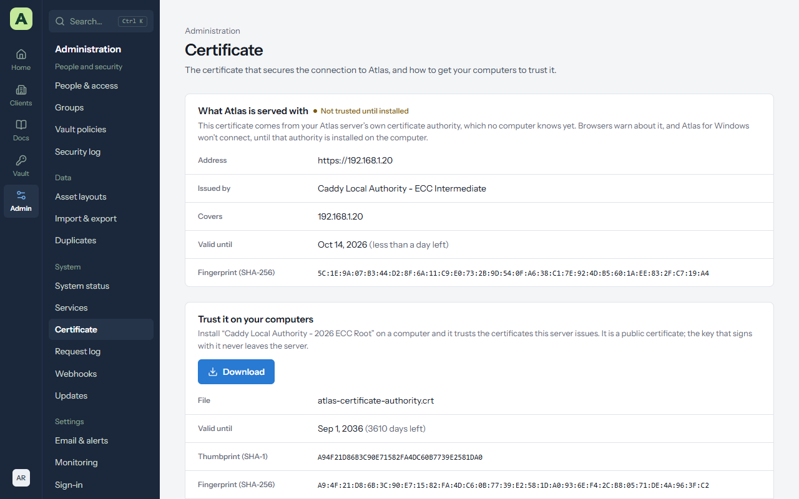

Chapter 10
Remote access and HTTPS
Atlas holds your clients' passwords, so it is only ever served over HTTPS, at one address. This chapter explains how that address works, how to choose the right way of publishing Atlas, and exactly how to set up each way, check it works, and get back if it doesn't.
Read How the address works and Choosing a way first. Then follow only the section for the way you choose.
How the address works
Atlas has exactly one address, such as https://atlas.example.com. It is the
PUBLIC_URL setting in /etc/msp-atlas/atlas.env (Linux), .env (Docker)
or C:\ProgramData\MSP Atlas\atlas.env (Windows). Everything depends on it, so changing how Atlas
is reached always means changing the address too.
-
Atlas answers only at that address. Every request must carry the address's host name (and
port, if it has one) in its
Hostheader. Anything else gets 403 Unknown host. This stops a hostile web page from reaching Atlas through a look-alike name (DNS rebinding), and it is why a reverse proxy must pass the original host name through. -
Atlas itself never handles HTTPS. It listens on
127.0.0.1:4318, on the server only. Something in front of it holds the certificate and passes requests in: Caddy (the web proxy the Linux installer sets up),cloudflared, Tailscale, or your own reverse proxy. -
Atlas only believes the proxies it is told to. A proxy says who the visitor is with the
X-Forwarded-Forheader. Atlas uses that address for rate limits, the security log and sign-in checks, but only from addresses listed inTRUST_PROXY. A visitor can't fake their address by sending the header themselves. - Cookies, passkeys and links are tied to the address. Sign-in cookies are bound to the host name, passkeys are registered to it, and every link Atlas makes (emails, shared documents and reports, the single sign-on return addresses) uses it. That is why everyone signs in again after the address changes. See What moves with the address.
Choosing a way
On servers set up with the Linux installer, Admin → Remote access offers four ways. Docker and Windows installs set the same things by hand; see Docker and Windows.
| Way | Who can reach Atlas | Certificate | Ports to open on your firewall | Choose it when |
|---|---|---|---|---|
| This server | Anyone who can reach the server | A free public one from Let's Encrypt for a DNS name, or the server's own for an IP address | 80 and 443 inbound | The server has a public IP address, or it is only used inside your network |
| Cloudflare Tunnel | Anyone on the internet, through Cloudflare | Cloudflare's, trusted everywhere | None | You use Cloudflare for DNS and don't want to open ports |
| Tailscale | Only devices on your tailnet | Tailscale's, trusted everywhere | None | Only your own staff use Atlas, from devices that run Tailscale |
| Tailscale with Funnel | Anyone on the internet, through Tailscale | Tailscale's, trusted everywhere | None | You use Tailscale and need clients or staff without Tailscale to reach Atlas |
| Your own reverse proxy | Whoever your proxy lets in | Yours, on the proxy | Whatever your proxy needs | You already run nginx, Traefik, IIS, HAProxy or Nginx Proxy Manager in front of your services |
Some things to weigh:
- Client accounts and shared links need the internet. If clients sign in to the client portal, or you send them shared documents or reports, they must be able to reach Atlas. Plain Tailscale (without Funnel) only lets in devices on your tailnet.
- Fewer open ports is safer. A tunnel (Cloudflare or Tailscale Funnel) makes an outbound connection, so nothing on the internet can connect to the server directly. Atlas's sign-in, MFA and rate limits still protect it either way.
- A trusted certificate matters for the apps. Atlas for Windows and the browser extension refuse a certificate the computer doesn't trust, with no way to override it. Every way except This server at an IP address gives you a certificate that's trusted everywhere.
- Only the owner can change it. Administrators can open Admin → Remote access and see how Atlas is reached; only an account with the owner role can change it, and Atlas asks for the owner's password again first.
Changing the way from Atlas
Every way is changed the same way. The sections after this one say what to prepare first and what to type into each field.
- Do the preparation for the way you're choosing, in its own section below. Most problems come from skipping it.
- Open Admin → Remote access. Right now shows how Atlas is reached today, at what address, and (for a reverse proxy) the proxy addresses it trusts.
- Under Change how Atlas is reached, select the way. Atlas shows the steps to do first, and the fields that way needs.
- Fill in the fields, and choose Review the change.
- The dialog Change how Atlas is reached? repeats the new address and what moves with it. Read it, then choose Change it. If Atlas asks for your password, enter it.
- The banner under Right now shows Waiting for the server to start on it…, then Working. Atlas restarts on its new address. This usually takes under a minute. Installing Cloudflare's or Tailscale's software the first time can take a few minutes.
- When it says Done., open Atlas at the new address and sign in again. The old page stops updating.
- Do the checks in that way's Check it works list, then the steps in What moves with the address.
What happens on the server
Atlas never has root rights, so it can't change the web proxy or install software itself. It writes the
request to a folder that a small helper on the server watches (the same helper that installs updates). The
helper checks every field against a strict pattern, then runs atlas-access, which:
- Keeps a copy of
atlas.env, the Caddyfile andaccess.conf. - Stops whichever tunnel the new way doesn't use, writes Caddy's new settings, and starts the tunnel the new way does use, installing it the first time.
-
Sets
PUBLIC_URLandTRUST_PROXYinatlas.env, reloads Caddy and restarts Atlas. - Waits about 90 seconds for Atlas to start on the new address, then asks the web proxy on the server for Atlas the way visitors, a tunnel or your reverse proxy would, to check it passes requests on.
-
If every step worked, saves the choice in
/etc/msp-atlas/access.conf. If any step failed, it puts all three files back, stops any tunnel it had just started, restarts Atlas on the old settings, and the banner says That didn't work, so nothing was changed. with the reason.
The two failures you may see are Atlas didn't start on its new address. and Atlas started, but the web proxy on this server didn't pass requests for … on to it., each followed by Nothing was changed: the previous settings are back. The log of the attempt says more; see Getting back in from the server.
The saved choice is applied again on every update and every run of the installer, so an update never undoes it. Secrets (the tunnel token and the Tailscale auth key) are passed in files only root can read, never on a command line, and are never written to any log.
This server
Caddy, on the Atlas server, serves Atlas over HTTPS on port 443 and sends anyone who comes to port 80 over to HTTPS. This is what the Linux installer sets up first.
How the certificate is chosen depends on the address:
-
A DNS name with a dot that the internet can reach, such as
atlas.example.com: Caddy gets a free certificate from a public authority (Let's Encrypt, or ZeroSSL as a fallback), and renews it by itself about a month before it runs out. Every computer trusts it. -
An IP address, such as
https://192.168.1.20, or a one-word name, such ashttps://atlas: no public authority will issue a certificate for these, so Caddy acts as its own certificate authority. The connection is just as encrypted, but browsers warn and Atlas for Windows refuses to connect until that authority is installed on each computer. See The certificate.
Before you start
For a public certificate:
-
Create the DNS record. At your DNS provider, add an
Arecord (and anAAAArecord if the server has IPv6) for the name, such asatlas, pointing at the server's public IP address. Check it withnslookup atlas.example.comfrom another computer; it must return the server's address. -
Open ports 80 and 443 from the internet to the server, on your firewall and on the server's
own firewall (for example
sudo ufw allow 80,443/tcp). The public authority connects to port 80 or 443 to check you control the name, before it issues the certificate and every time it renews it. Closing port 80 later makes renewals fail. - Don't put another proxy or CDN in front (for example, Cloudflare's orange-cloud proxy). The authority must reach Caddy itself. If you want Cloudflare in front, use Cloudflare Tunnel instead.
For an IP address or a one-word name, there's nothing to prepare. Plan to install the server's certificate authority on every computer that uses Atlas.
Fields
| Field | What to enter |
|---|---|
| Address people will use |
https:// followed by the DNS name or IP address, such as
https://atlas.example.com or https://192.168.1.20. No path. Add a port only
if Atlas must be served on one other than 443, such as https://atlas.example.com:8443;
the public authority still needs ports 80 or 443 to issue the certificate.
|
Check it works
- Open the address in a private browser window. It should open the sign-in page with no certificate warning (for a DNS name).
- Open Admin → Certificate. It should say Trusted everywhere for a DNS name, or Not trusted until installed for an IP address, which is expected until you install the authority.
- Open
http://and the name. It should move you tohttps://by itself.
If something goes wrong
| What you see | Why, and what to do |
|---|---|
| The browser says the connection was refused or timed out |
Port 443 isn't open to the server, or the DNS name points elsewhere. Check nslookup and
your firewall.
|
| A certificate warning on a DNS name, or Admin → Certificate says it's from Caddy's own authority |
Caddy couldn't get a public certificate. Usually port 80 isn't reachable from the internet, or the
name doesn't resolve publicly. A name that only exists in your internal DNS, such as
atlas.corp.example.com, can't get a public certificate this way. On the server,
sudo journalctl -u caddy -n 50 shows the authority's answer. Fix the cause, then
Restart the web proxy on Admin → Services.
|
| 403 Unknown host | You opened Atlas at a different name or IP address from Address people will use. Use that address exactly. |
| The banner says the web proxy refused the new settings | The address couldn't be turned into a valid Caddy site. Check it has no path, spaces or unusual characters. |
Cloudflare Tunnel
A small program from Cloudflare, cloudflared, runs on the Atlas server and keeps an outbound
connection open to Cloudflare. Visitors go to your public hostname at Cloudflare, and Cloudflare sends their
requests down that connection to Atlas. Nothing on the internet connects to your server directly, so no ports
need to be opened. Cloudflare's certificate is trusted everywhere.
Caddy stops serving HTTPS in this mode. It keeps listening on port 80 only to send anyone who comes to the server's own address to the tunnel's address.
Before you start
You need a Cloudflare account, with the domain you want to use (such as example.com) added to it
and its DNS hosted at Cloudflare. A free plan is enough.
-
Create the tunnel. In the Cloudflare dashboard, open Zero Trust, then
Networks → Tunnels, and choose Create a tunnel. Choose
Cloudflared as the connector type, give the tunnel a name such as
atlas, and save it. -
Copy the token. The next screen shows commands to install the connector. Each contains a
long token, which starts with
eyJ. Copy only the token (the part after--tokenorservice install), not the whole command. Don't run the command: Atlas installs and runscloudflareditself. -
Add the public hostname. Go to the tunnel's Public Hostname tab (shown as
Published application routes in newer dashboards) and add one:
-
Subdomain:
atlas(or whatever you prefer). Domain:example.com. -
Service type:
HTTP. URL:localhost:4318. - Save it. Cloudflare creates the DNS record for the name by itself.
-
Subdomain:
-
Remove any old DNS record for that name. If
atlas.example.comalready had anAorCNAMErecord, Cloudflare can't create its own; delete the old one first.
Fields
| Field | What to enter |
|---|---|
| Address people will use |
https:// followed by the public hostname you added, such as
https://atlas.example.com. It must match the hostname in Cloudflare exactly, or Atlas
answers 403 Unknown host.
|
| Tunnel token |
The token you copied. It's kept in /etc/msp-atlas/cloudflared.env, which only root can
read, and is never shown again. Once one is saved, the field says so; leave it empty to keep using it,
or paste a new one to replace it.
|
Check it works
- Open the address in a private browser window, from a network other than the server's (a phone with Wi-Fi off works). It should open the sign-in page.
- In the Cloudflare dashboard, the tunnel's status should be Healthy.
-
On the server,
systemctl status msp-atlas-cloudflaredshould say active (running). - Close ports 80 and 443 on your firewall if nothing else needs them. Atlas no longer uses them from the internet.
If something goes wrong
| What you see | Why, and what to do |
|---|---|
| That doesn't look like a tunnel token |
You pasted the whole command, or part of the token. Copy only the long string that starts with
eyJ.
|
| The tunnel didn't start |
cloudflared couldn't connect with that token. Run
sudo journalctl -u msp-atlas-cloudflared -n 30 on the server. A deleted tunnel, or a
token from another tunnel, are the usual causes. Copy the token again from the tunnel's page.
|
| Cloudflare error page 1033 or Bad gateway |
The tunnel is down, or the public hostname's service isn't HTTP and
localhost:4318.
|
| 403 Unknown host | The public hostname in Cloudflare and Address people will use don't match. Make them the same. |
| The name doesn't resolve at all | The DNS record wasn't created, usually because an old record for the name was in the way. Delete it, then save the public hostname again. |
A certificate error for a name like atlas.office.example.com |
Cloudflare's free certificate covers one level below your domain (atlas.example.com), not
two. Use a one-level name, or buy Cloudflare's advanced certificate.
|
Tailscale
Tailscale connects your devices into a private network called a tailnet. In this mode Tailscale runs on the
Atlas server, joins your tailnet as a machine called atlas, and serves Atlas at the server's
tailnet name, such as https://atlas.tail1234.ts.net, with a certificate Tailscale gets for it.
You don't choose the address: Tailscale gives it.
There are two choices:
- Tailscale Serve (the box Serve Atlas on the internet with Funnel left unticked): only devices signed in to your tailnet can reach Atlas. Nobody else can even see the sign-in page.
- Tailscale Funnel (the box ticked): anyone on the internet with the address can reach the sign-in page, through Tailscale's servers. Choose this if clients or staff without Tailscale need Atlas.
Caddy stops serving HTTPS in this mode, so Tailscale can use port 443. It keeps listening on port 80 only to send anyone who comes to the server's own address to the tailnet address.
Before you start
- Turn on MagicDNS and HTTPS. In the Tailscale admin console, open DNS. Turn on MagicDNS if it isn't on, then, under HTTPS Certificates, choose Enable HTTPS. Without these, the server has no name and Tailscale can't get it a certificate.
-
For Funnel only, allow Funnel. Open Access controls and make sure the
policy file gives the server the
funnelattribute. New tailnets have this by default. If yours doesn't, add:
"nodeAttrs": [
{ "target": ["autogroup:member"], "attr": ["funnel"] }
]-
Make an auth key, if the server isn't on your tailnet yet. Open
Settings → Keys and choose Generate auth key. A one-off key (not reusable)
is enough; Atlas uses it once to sign the server in. Copy it: it starts with
tskey-auth-. - Decide how the server's own key expires. Tailscale signs devices out after a period (180 days by default) unless you turn that off. Once the server has joined, find atlas under Machines and choose Disable key expiry, or Atlas becomes unreachable when it expires.
-
Check the name is free. If another machine on the tailnet is already called
atlas, Tailscale names this oneatlas-1, and that's the address. The banner shows the address once it's done.
Fields
| Field | What to enter |
|---|---|
| Serve Atlas on the internet with Funnel | Unticked: only your tailnet. Ticked: anyone with the address. |
| Tailscale auth key | The key from step 3, only the first time, while the server isn't signed in to Tailscale. Leave it empty afterwards, for example when you switch Funnel on or off. It's used once and never stored or logged. |
Check it works
- From a device on your tailnet, open the address shown in Right now. It should open the sign-in page with no certificate warning.
- For Funnel, open the address from a device that isn't on your tailnet, such as a phone on mobile data. Funnel can take a few minutes to start answering after it's first turned on.
- For Serve, check that a device not on your tailnet can't reach it.
-
In the Tailscale admin console, Machines shows
atlasas connected, with key expiry disabled.
If something goes wrong
| What you see | Why, and what to do |
|---|---|
| This server isn't signed in to Tailscale. Paste an auth key | It's the first time, and no key was given. Make one (step 3) and paste it. |
| Tailscale refused the auth key | The key has expired, was already used, or was revoked. Make a new one. |
| Tailscale is signed in but has no name for this server yet | MagicDNS is off. Turn it on (step 1) and try again. |
| Tailscale wouldn't serve Atlas | HTTPS certificates are off for the tailnet, or, with Funnel, the policy file doesn't allow Funnel. Do steps 1 and 2. |
| The address works on your tailnet but not from the internet | Funnel is off, or still starting. Tick Serve Atlas on the internet with Funnel and apply again, then wait a few minutes. |
| Atlas suddenly unreachable months later |
The server's Tailscale key expired. Sign it back in on the server with sudo tailscale up,
then disable key expiry (step 4).
|
Your own reverse proxy
Your own proxy (nginx, Traefik, IIS with Application Request Routing, HAProxy, Nginx Proxy Manager and so on) holds the public certificate and serves HTTPS to visitors, then passes each request on to the Atlas server. Caddy, on the Atlas server, accepts those requests on two ports, and only from the proxy addresses you list:
- Port 80, plain HTTP. The simplest choice when the proxy and the Atlas server are on a network you trust, such as the same LAN or virtual network.
- Port 443, HTTPS. Use it when the connection between the proxy and the Atlas server crosses a network you don't trust. Caddy serves it with a certificate from the server's own authority for the address, because the address's DNS points at your proxy, so the server can't get a public certificate for it.
Anyone else who reaches either port, including people who type the Atlas server's own address, gets Use the address your reverse proxy serves Atlas at. with a 403 error. Nothing is served to them.
Before you start
-
Find the proxy's address as the Atlas server sees it. This is the IP address the proxy
connects from, which may differ from the address people use to reach the proxy. If the proxy has several, or
runs in a cluster, use a range such as
10.0.1.0/24. To check, runsudo ss -tn '( sport = :80 or sport = :443 )'on the Atlas server while you open a page through the proxy: the address on the right of each line is the one connecting. -
Get a certificate on the proxy for the address people will use, such as
atlas.example.com. How depends on the proxy; most get one from Let's Encrypt by themselves. - Point the address's DNS record at the proxy, not at the Atlas server.
- Allow the proxy to reach the Atlas server on TCP port 80 or 443 (whichever you'll use), through any firewall between them. Nothing else needs to reach the Atlas server.
-
Set up the proxy as below. It must:
-
send requests to
http://<Atlas server's address>:80orhttps://<Atlas server's address>:443. Port 4318 won't answer: Atlas listens there only for the server itself; -
for HTTPS, either not check the Atlas server's certificate (nginx and Nginx Proxy Manager don't by
default; in Traefik, set
insecureSkipVerifyon aserversTransport), or trust the server's own authority, which you can download from Admin → Certificate; -
keep the original
Hostheader (the address people use), not replace it with the Atlas server's address; -
send
X-Forwarded-Forwith the visitor's address, andX-Forwarded-Proto: https; -
accept uploads of at least 25 MB (more if you raised
ATLAS_MAX_UPLOAD_MB), and allow at least 60 seconds for a response, so attachments, imports and backups work.
-
send requests to
An nginx site, for example, sending on over plain HTTP:
server {
listen 443 ssl;
server_name atlas.example.com;
ssl_certificate /etc/ssl/atlas.example.com/fullchain.pem;
ssl_certificate_key /etc/ssl/atlas.example.com/privkey.pem;
client_max_body_size 30m;
location / {
proxy_pass http://10.0.0.20:80;
proxy_set_header Host $host;
proxy_set_header X-Forwarded-For $proxy_add_x_forwarded_for;
proxy_set_header X-Forwarded-Proto https;
proxy_read_timeout 120s;
}
}
To send on over HTTPS instead, change proxy_pass to https://10.0.0.20:443 and add
proxy_ssl_server_name on; and proxy_ssl_name atlas.example.com;, so nginx asks for
the certificate for Atlas's address.
In Nginx Proxy Manager, add a proxy host with Domain Names
atlas.example.com, Scheme http (or https),
Forward Hostname / IP the Atlas server's address and Forward Port
80 (or 443). On the SSL tab, request a certificate and tick
Force SSL. Under Advanced, add client_max_body_size 30m;.
In IIS, use URL Rewrite with Application Request Routing: turn on the proxy in ARR's
Server Proxy Settings, untick Reverse rewrite host in response headers so
the Host header is kept, and add a reverse proxy rule to
http://<Atlas server>:80. Set Maximum allowed content length under Request
Filtering to at least 30 MB.
Fields
| Field | What to enter |
|---|---|
| Address people will use |
https:// followed by the name your proxy serves, such as
https://atlas.example.com. Atlas only answers requests whose Host is this
name.
|
| Your reverse proxy's addresses |
The proxy's IP address, or a range, as the Atlas server sees it: one per line, or separated by commas,
up to 20. IPv4 and IPv6 both work, such as 10.0.0.5, 10.0.1.0/24 or
fd00::5. Only these may send requests to Atlas, and only they are believed about a
visitor's address.
|
Check it works
- Open the address in a private browser window. It should open the sign-in page, with your proxy's certificate.
-
Sign in, then open Admin → Security log. Your sign-in should show your own IP address, not
the proxy's. If it shows the proxy's, the proxy isn't sending
X-Forwarded-For. -
From a computer that isn't the proxy, open
http://<Atlas server's address>. It should say Use the address your reverse proxy serves Atlas at. That shows only the proxy is let in. - Upload an attachment larger than a few megabytes to check the size limit.
If something goes wrong
| What you see | Why, and what to do |
|---|---|
| Connection refused, or the proxy says the upstream refused it | The proxy is sending to port 4318, or a firewall between them blocks port 80 or 443. Point it at port 80 or 443, and open that port from the proxy only. Servers on Atlas 2.4.1 or earlier answer only on port 80 in this mode; update Atlas, or use port 80. |
| The proxy says the upstream certificate isn't trusted | It's sending on over HTTPS and checking the Atlas server's certificate, which comes from the server's own authority. Turn the check off for this upstream, or install that authority on the proxy. |
| Use the address your reverse proxy serves Atlas at. through the proxy | The proxy connects from an address you didn't list. Find its real address (step 1) and add it. |
| 403 Unknown host |
The proxy replaces the Host header with the Atlas server's address, or the address you
entered differs from the one people use. Keep the original host (proxy_set_header Host $host;
in nginx), and make the two match.
|
| Sign-in fails, or Atlas keeps signing you out |
The proxy isn't sending X-Forwarded-Proto: https, so Atlas thinks the connection isn't
secure and the browser drops its cookies.
|
| 413 Request Entity Too Large when uploading | The proxy's upload limit is too low. Raise it (step 5). |
| Every sign-in in the security log shows the same address | The proxy isn't sending X-Forwarded-For, or isn't one of the addresses you listed. |
Docker and Windows
Admin → Remote access can change things only on servers set up with the Linux installer, because it needs the installer's helper. On Docker and Windows the page shows the current address and what to set instead. The ideas are the same:
-
PUBLIC_URLis the address people will use, starting withhttps://. -
TRUST_PROXYlists the addresses that connect to Atlas and may say who the visitor is:127.0.0.1,::1whencloudflared, Tailscale or a proxy runs on the same computer, or the proxy's address otherwise.truetrusts anything that connects, which is only safe when nothing but your proxy can reach Atlas's port.
Docker. The Compose file runs Caddy in front of Atlas with a public certificate for
ATLAS_DOMAIN, and sets TRUST_PROXY to true because only Caddy can reach
the app container. To use a tunnel or your own proxy instead, point it at Caddy's port 80, or replace the
Caddy service with your own. Set PUBLIC_URL and ATLAS_DOMAIN in .env,
then run docker compose -f deploy/docker-compose.yml --env-file .env up -d.
Windows. The installer sets Atlas to listen on 127.0.0.1:4318 and
TRUST_PROXY=true, since only programs on the same computer can reach it. Publish it with IIS,
Caddy for Windows, cloudflared or Tailscale, pointed at http://127.0.0.1:4318. To
change the address, run
.\deploy\windows\Install-Atlas.ps1 -PublicUrl https://new.example.com from an elevated PowerShell
prompt; it updates atlas.env and restarts the service.
What moves with the address
When the address changes, these change with it. Do the ones that apply to you straight after.
| What | What happens, and what to do |
|---|---|
| Everyone's sign-in | Everyone signs in again at the new address. Their old session belonged to the old address. |
| Passkeys | A passkey works only at the address it was added on. People sign in with their password and authenticator app, then add a passkey again on their own account page. |
| Microsoft sign-in (Entra ID) |
In your Entra app registration, add the new redirect address
https://<new address>/api/auth/entra/callback.
|
| SAML sign-in |
At your identity provider, change the audience (entity ID) and the single sign-on (ACS) address to the
new ones shown in the SAML settings:
https://<new address>/api/auth/saml/metadata and
https://<new address>/api/auth/saml/acs.
|
| Microsoft 365 (GDAP) and Microsoft Teams | Add the new redirect addresses shown on their settings pages to the app registration, and reconnect if asked. |
| The browser extension and Atlas for Windows | People sign them in again with the new address. |
| Shared documents and reports | Links already sent use the old address, which no longer answers. Share them again. |
| The BitLocker collector | Scripts already deployed send to the old address. Download the script again from the collector's page and redeploy it. |
| Webhook receivers and scripts using API keys | Anything that calls Atlas's API needs the new address. API keys themselves keep working. |
| Bookmarks and documentation | Tell your team and clients the new address. The old one answers 403 Unknown host. |
Getting back in from the server
If you can't open Atlas at its new address, and the automatic fallback didn't apply because the problem is outside the server, set the way back from the server's console. Sign in to the server with SSH and run, for example:
sudo atlas-access apply --mode direct --public-url https://atlas.example.comUse the address that worked before. The other ways take the same options the page does:
sudo atlas-access apply --mode cloudflare --public-url https://atlas.example.com --token-file /root/tunnel-token
sudo atlas-access apply --mode tailscale [--funnel] [--auth-key-file /root/ts-key]
sudo atlas-access apply --mode proxy --public-url https://atlas.example.com --trusted 10.0.0.5,10.0.1.0/24
Secrets are read from a file, so they never appear in the shell's history; delete the file afterwards.
sudo atlas-access reapply applies the saved choice again, which is what every update does.
To see what happened during the last change made from the page, read
/var/lib/msp-atlas-updater/last-access.log. If the banner stays on
Waiting for the server to start on it… for more than two minutes, the helper isn't running:
sudo systemctl restart msp-atlas-updater.path brings it back.
The installer takes the same choices when you set Atlas up:
--access cloudflare --tunnel-token-file FILE,
--access tailscale [--funnel] [--tailscale-key-file FILE], or
--access proxy --trusted-proxy LIST, together with --public-url.
The certificate


Admin → Certificate shows the certificate Atlas is served with, checked the way a visitor's computer checks it: by connecting to Atlas's own address. Administrators can open it. It shows who issued the certificate, the names it covers, when it runs out, and its fingerprint, under one of these:
| Status | What it means, and what to do |
|---|---|
| Trusted everywhere | A public authority issued it. Nothing to do. |
| Not trusted until installed | It comes from the server's own authority, because Atlas is at an IP address or a one-word name. The connection is encrypted, but browsers warn and Atlas for Windows refuses to connect until the authority is installed. See below. |
| Expired | It ran out. If the web proxy on this server issued it, Restart the web proxy on Admin → Services to get a new one. Otherwise renew it where it was issued, such as on your own proxy. |
| For another address | It doesn't cover Atlas's address. Usually the address was changed but the proxy still serves the old certificate. |
| Refused | The computer rejects it for the reason shown. |
| No HTTPS | Atlas isn't served over HTTPS at its address. Expected on a development copy only. |
| Couldn't check | Atlas couldn't connect to its own address from the server. On a tunnel or your own proxy, the server may not be able to reach the public address itself; that's harmless if visitors can. |
Installing the server's own authority
When the page says Not trusted until installed, install the authority on every computer that uses Atlas. The card Trust it on your computers gives you everything:
- Choose Download. The file is the authority's public certificate, not a key, so it's safe to copy and email.
- Check it's the right file. Run the PowerShell command the page gives, next to the file, and compare the thumbprint it prints with the Thumbprint (SHA-1) on the page. They must match exactly.
-
Install it, with the command the page gives:
- for everyone on the computer, from PowerShell run as administrator. This puts it in the computer's trusted root authorities;
- for yourself only, from an ordinary PowerShell window;
- or, for many computers, with Group Policy: Computer Configuration → Policies → Windows Settings → Security Settings → Public Key Policies → Trusted Root Certification Authorities, then Import.
-
Close and reopen the browser, and open Atlas at the address on the certificate. A certificate for
192.168.1.20doesn't cover a name that points to the same server, and the reverse.
On a Mac, open the file, add it to the System keychain, then set it to Always Trust in Keychain Access. Firefox keeps its own list unless its enterprise policy is set to use the system's.
The web proxy renews its own certificates by itself. If one ever looks stale, Restart the web proxy on Admin → Services.